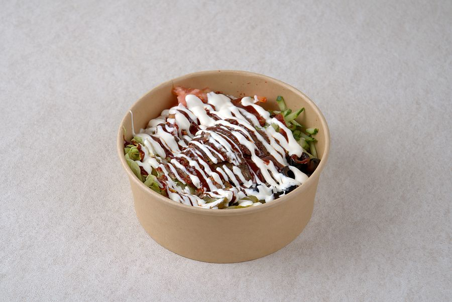

← 메뉴 전체 보기
할랄 라이스보울

밥 위에 고기 120g과 양상추·토마토·올리브·할라피뇨 그리고 소스 2가지를 올린 뉴욕식 한 그릇입니다.
- 치킨8,900원
- 믹스9,900원
- 비프10,900원
영양성분 (1인분)
| 치킨 | 믹스 | 비프 | |
|---|---|---|---|
| 중량 | 472g | 472g | 472g |
| 열량 | 671kcal | 703kcal | 734kcal |
| 탄수화물 | 84.6g | 84.6g | 84.6g |
| 당류 | 4.6g | 4.6g | 4.6g |
| 단백질 | 35.0g | 37.4g | 39.8g |
| 지방 | 21.6g | 24.0g | 26.4g |
| 포화지방 | 4.5g | 6.3g | 8.1g |
| 트랜스지방 | 0.16g | 0.46g | 0.76g |
| 콜레스테롤 | 117.1mg | 106.9mg | 96.7mg |
| 나트륨 | 1131.2mg | 1113.2mg | 1095.2mg |
매장 배합표와 국가표준식품성분표로 계산한 추정값입니다. 공인 기관 분석값은 아닙니다.
비슷한 식품 값으로 추정한 재료: 쌀(밥), 올리브, 할라피뇨
이 메뉴에 들어가는 재료의 원산지
| 재료 | 원산지 |
|---|---|
| 소고기 | 인도네시아, 호주, 브라질 |
| 닭고기 | 인도네시아, 호주, 브라질 |
| 쌀 | 대한민국 |
| 또띠아 | 대한민국 |
| 양상추 | 중국 |
| 토마토 | 대한민국 |
| 할라피뇨 | 대한민국 |
| 올리브 | 스페인 |
| 마요네즈 | 대한민국 |
| 요거트 | 대한민국 |
| 마늘 | 대한민국 |
| 케찹 | 대한민국 |
| 스리라차 | 태국 |
| 칠리소스 | 인도 |
| 레몬즙 | 칠레 |